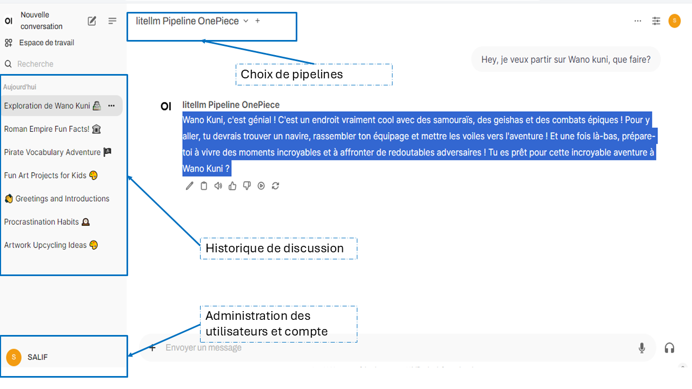

Faire tourner son chatbot avec une interface équivalente à ChatGPT grâce à OpenWebUI¶
L'ère des assistants conversationnels est en pleine expansion, et grâce à des outils comme OpenWebUI, il est désormais possible de créer son propre UI conversationnel avec des fonctionnalités similaires à celles de ChatGPT sans beaucoup d'effort. On suppose que vous avez déjà un chatbot qui fonctionne correctement et que vous souhaitez une meilleure interface utilisateur. Cet article vous guidera dans la mise en place d'une architecture pipeline pour un chatbot, en utilisant Docker Compose pour automatiser le déploiement.
Nous aborderons les points suivants : 1. Qu'est-ce qu'OpenWebUI ? 2. Concepts clés : valves, pipes, filtres 3. Construire votre stack avec Docker Compose
1. Qu’est-ce qu’OpenWebUI ?¶
OpenWebUI est conçu pour être une solution flexible d’interface utilisateur (UI) open-source qui facilite l’interaction avec les LLM comme GPT-3.5 ou GPT-4. Il repose sur deux composants principaux : - Le composant OpenWebUI proprement dit : C’est l’interface utilisateur qui permet de gérer les interactions entre l'utilisateur et le modèle. - Le composant Pipelines : Cette composante s’occupe de la logique LLM. Elle permet d'intercepter, traiter et modifier les prompts utilisateurs avant de les envoyer au modèle final.
Bon, comme vous le savez , une image vaut mieux milles vaux. Voici la magie que nous propose openwebui 
{kind=link}
2. Concepts de Pipelines¶
2.1. Concepts de Valves¶
Les valves jouent un rôle de régulation dans le pipeline, autorisant ou bloquant le passage de certaines données.
Pour qu'un pipeline soit fonctionnel, on doit avoir une classe valves. Le plus souvent, c’est l'endroit où sont passés les credentials clés et paramètres des modèles.
Pour comprendre l'outil pipelines, il faut s’intéresser aux valves, filtres (filters) et pipes.
2.2. Concept de Filter (Filtre)¶
Un Filter Pipeline est principalement utilisé pour intercepter le message avant qu'il ne soit envoyé au LLM, ou après avoir reçu la réponse du LLM mais avant de l'envoyer à l'utilisateur. L'idée derrière le Filter Pipeline est d’ajouter des étapes avant ou après l'appel au modèle. Il sert donc principalement à : - Récupérer des informations externes (RAG) pour enrichir le contexte du message avant l'envoi au LLM. - Exécuter des outils qui ajoutent des données supplémentaires nécessaires au LLM. - Appliquer des filtres de sécurité ou d'autres types de transformation avant que la réponse ne soit affichée à l'utilisateur.
graph LR;
A[Chat Request] --> B[Inlet];
B --> C[LLM Model];
C --> D[Outlet];
D --> E[Chat Response];
subgraph Filter Pipeline
B-->C;
C-->D;
endExemple :¶
Si l'utilisateur demande "Quelle est la météo à Paris ?", le Filter Pipeline peut intercepter la requête avant de l’envoyer au LLM, appeler une API météo pour obtenir la température, et ensuite ajouter cette information dans le message contextuel envoyé au modèle.
Voici un diagramme pour illustrer le flux d'un Filter Pipeline :
2.3 Concept de Pipe (ou Manifold Pipeline)¶
Un Pipe Pipeline prend entièrement en charge le traitement des messages. Il remplace ou enrichit la manière dont le message est géré par le LLM. Au lieu de simplement ajouter des informations autour du message, comme dans un Filter Pipeline, le Pipe Pipeline contrôle tout le processus. Cela inclut : - Appeler différents modèles LLM (comme GPT-4, GPT-3.5, Mistral, etc.) pour répondre directement au message. - Construire des workflows complexes qui peuvent intégrer de nouvelles fonctionnalités, comme exécuter du code, consulter des bases de données, ou récupérer des informations. - RAG (Retrieve and Generate) : Créer un système complet où les informations sont non seulement récupérées mais aussi générées par un modèle choisi.
Exemple :¶
Dans un Pipe Pipeline, si l'utilisateur demande "Raconte-moi une histoire", ce pipeline pourrait décider quel modèle LLM utiliser (GPT-4, Claude, etc.) et créer une réponse en fonction du workflow configuré.
Voici un diagramme pour illustrer le flux d'un Pipe Pipeline :
graph LR;
A[Chat Request] --> B[Pipe];
B --> C[Chat Response];
subgraph Pipe Pipeline
B;
endOn parle de pipelines manifold lorsque l’on a un pipe qui sait gérer plusieurs modèles. En gros, c’est la même logique d'implémentation, mais le LLM utilisé pour le chat va différer. Un peu plus bas, j'ai implémenté un pipe qui sert de ChatGPT, où je peux choisir quel modèle utiliser entre GPT-3.5, GPT-4, ou GPT-mini.
2.4. Différences¶
La différence principale entre un Filter Pipeline et un Pipe (ou Manifold) Pipeline repose sur le moment et la manière dont les données sont traitées avant ou après l'appel à un modèle de langage (LLM).
3. Implémentation de pipelines¶
3.1. Exemple de pipeline simple :¶
Voici un exemple d'implémentation d'un pipeline basique, qui utilise l'API OpenAI pour répondre aux messages utilisateur.
from typing import List, Union, Generator, Iterator
from pydantic import BaseModel
import os
import requests
class Pipeline:
class Valves(BaseModel):
OPENAI_API_KEY: str = os.getenv("OPENAI_API_KEY", "my-keys")
def __init__(self):
self.name = "OpenAI Pipeline GPT3.5"
self.valves = self.Valves()
def pipe(self, user_message: str, model_id: str, messages: List[dict], body: dict) -> Union[str, Generator, Iterator]:
headers = {"Authorization": f"Bearer {self.valves.OPENAI_API_KEY}", "Content-Type": "application/json"}
payload = {**body, "model": model_id}
self._clean_payload(payload)
try:
response = requests.post(url="https://api.openai.com/v1/chat/completions", json=payload, headers=headers)
response.raise_for_status()
return response.json()
except requests.RequestException as e:
return f"Error: {e}"
@staticmethod
def _clean_payload(payload: dict):
keys_to_remove = {"user", "chat_id", "title"}
for key in keys_to_remove:
payload.pop(key, None)
3.2 Exemple de pipeline manifold (multi-modèle) :¶
Un pipeline manifold permet de gérer plusieurs modèles d'IA en parallèle. Voici un exemple qui inclut plusieurs modèles d'OpenAI.
from typing import List, Union, Generator, Iterator
from pydantic import BaseModel
import os
import requests
class Pipeline:
class Valves(BaseModel):
OPENAI_API_BASE_URL: str = "https://api.openai.com/v1"
OPENAI_API_KEY: str = os.getenv("OPENAI_API_KEY", "your-openai-api-key")
def __init__(self, name: str = "manifold: "):
self.type = "manifold"
self.name = name
self.valves = self.Valves()
self.pipelines = self.get_openai_models()
def get_openai_models(self):
predefined_model_ids = ['gpt-4', 'gpt-3.5-turbo', 'gpt-4o-2024-08-06', 'gpt-4o-mini']
return [{'id': model_id, 'name': model_id} for model_id in predefined_model_ids]
def pipe(self, user_message: str, model_id: str, messages: List[dict], body: dict) -> Union[str, Generator, Iterator]:
headers = {"Authorization": f"Bearer {self.valves.OPENAI_API_KEY}", "Content-Type": "application/json"}
payload = {**body, "model": model_id}
self._clean_payload(payload)
try:
response = requests.post(url=f"{self.valves.OPENAI_API_BASE_URL}/chat/completions", json=payload, headers=headers)
response.raise_for_status()
return response.json()
except requests.RequestException as e:
return f"Error: {e}"
@staticmethod
def _clean_payload(payload: dict):
keys_to_remove = {"user", "chat_id", "title"}
for key in keys_to_remove:
payload.pop(key, None)
3.3 Pour aller plus loin :¶
Il n'y a rien de mieux que la documentation officielle. Vous y trouverez une pléthore d'exemples d'implémentation de pipelines que vous pourriez personnaliser. Vous trouverez plus d'une cinquantaine d'exemples ici :
exemples de pipelines
4. Construire votre stack avec Docker Compose¶
4.1. Motivation¶
L'une des manières les plus efficaces de mettre en place cette architecture est d’utiliser Docker Compose. Voici un exemple de configuration pour orchestrer les services nécessaires au fonctionnement de votre chatbot.
Selon la documentation officielle pour installer open-webui/open-webui, une commande telle que :
docker run -d -p 3000:8080 -v ollama:/root/.ollama -v open-webui:/app/backend/data --name open-webui --restart always ghcr.io/open-webui/open-webui:ollama
est recommandée. D'autres méthodes d'installation sont aussi détaillées sur le site officiel ici.
En utilisant cette commande, l'interface est déjà prête à l'emploi. Cependant, pour la communication avec l'UI, https://github.com/open-webui/pipelines propose une configuration simplifiée via Docker :
Exécutez le conteneur Pipelines avec la commande suivante :
docker run -d -p 9099:9099 --add-host=host.docker.internal:host-gateway -v pipelines:/app/pipelines --name pipelines --restart always ghcr.io/open-webui/pipelines:main
Ensuite, connectez Open WebUI :
- Allez dans Settings > Connections > OpenAI API dans Open WebUI.
- Configurez l'URL de l'API à
http://localhost:9099et la clé API à0p3n-w3bu!. Vos pipelines devraient maintenant être actifs.
Cependant, la connexion n’est pas toujours aussi simple 😅. La documentation n’est pas encore optimale. Je vous conseille de bien explorer Pipelines sur le site et de comprendre comment l’interaction entre les deux services devrait se faire pour améliorer la communication.
Parfois, des pipelines sont déjà disponibles et vous pouvez vous inspirer des exemples ici : Pipelines Exemples. Cependant, l’intégration est une autre affaire. Après plusieurs essais, j’ai réussi à connecter les deux services en ajustant des variables clés comme REQUIREMENTS_PATH, PYTHONPATH, et d'autres, grâce à des volumes de copie pour les pipelines.
4.2. Exemple de docker-compose.yml :¶
```ervices: open-webui: image: ghcr.io/open-webui/open-webui:main container_name: open-webui volumes: - open-webui:/app/backend/data ports: - ${OPEN_WEBUI_PORT-3000}:8080 environment: - WEBUI_SECRET_KEY= - OPENAI_API_BASE_URL=http://pipelines:9099 - OPENAI_API_KEY=0p3n-w3bu! - ENABLE_OLLAMA_API=false extra_hosts: - host.docker.internal:host-gateway restart: unless-stopped
pipelines: image: ghcr.io/open-webui/pipelines:main container_name: pipelines volumes: - ./chat_pipelines/pipelines:/app/pipelines - ./chat_pipelines/openwebui_utils:/app/openwebui_utils - ./src/onepiece_bot:/app/onepiece_bot - ./requirements.txt:/app/requirements_custom.txt extra_hosts: - host.docker.internal:host-gateway environment: - OPENAI_API_KEY=\({OPENAI_API_KEY} - PIPELINES_DIR=\) - RESET_PIPELINES_DIR=\({RESET_PIPELINES_DIR} - PIPELINES_REQUIREMENTS_PATH=\) - PYTHONPATH=/app restart: unless-stopped ports: - 9099:9099
volumes: open-webui: ```
Comme vous travaillez avec Docker, vous pouvez facilement inspecter ce qui se passe et vérifier si tout fonctionne correctement ou non. Le service UI (OpenWebUI) fonctionne généralement très bien ; cependant, il faut porter une attention particulière à Pipelines. Pour déboguer, vous pouvez exécuter une commande comme docker ps ou docker logs pipelines.
Si vous utilisez Docker Desktop, vous devriez voir quelque chose de similaire à ceci, montrant que vos deux conteneurs sont en cours d'exécution :
{kind=link}
Les logs sont disponibles en cliquant sur les noms de chaque service :
{kind=link}
Ici, on voit que tout fonctionne bien ! 😊
Pour un exemple complet d'implémentation de bout en bout et comment l'exécuter, je vous invite à consulter mon dépôt GitHub où vous trouverez des exemples et des pipelines prêts à l'emploi : Mon dépôt GitHub. Vous y trouverez également des informations sur les variables d'environnement et d'autres configurations utiles.
Conclusion¶
En combinant OpenWebUI et une architecture pipeline, il est possible de créer un UI de conversion flexible commme celui de chatgpt, tout en ayant un contrôle total sur l'interface utilisateur et la logique de traitement des requêtes. Que vous soyez un passionné de LLM ou simplement curieux de tester, OpenWebUI avec Pipelines offre une base solide pour innover. Comme le projet est actuellment nouveau, n'hesitez pas à suivre de près leurs evolutions.